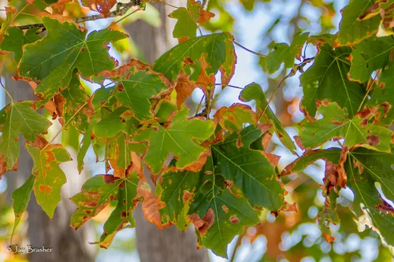
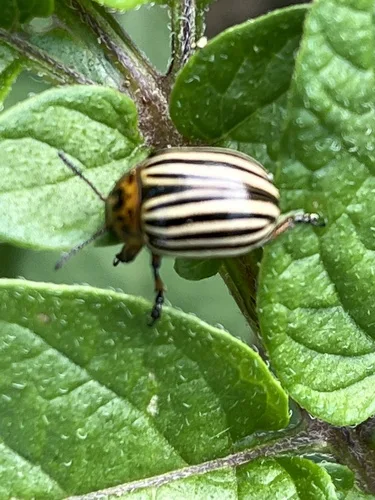
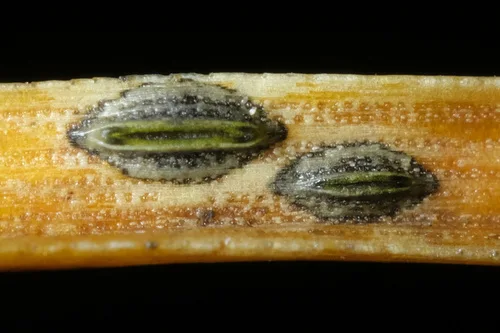
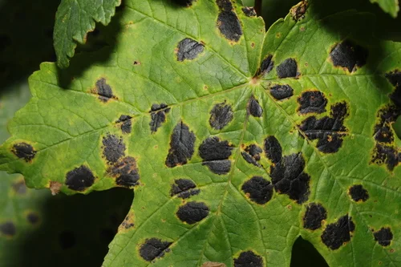
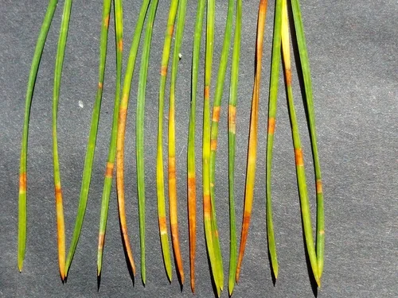

Leaf problems

Brown patches on leavesCompare window-facing and sheltered leaves. Note whether patches follow the margin, lie between veins or occur at random.

Brown spots with yellow halosLook for a yellow ring around each spot and check whether the border appears water-soaked.

Fine brown specklingInspect leaf undersides with a hand lens. See whether dots wipe off and look near the veins for moving pests.

Dry brown leaf tipsCheck for brittle tips, widening margins and crusty mineral deposits around the pot rim.

Black patches on leavesLook for dark lesions within the leaf, yellowing around spots and premature loss of lower leaves.

Clusters of tiny black dotsUse a lens to distinguish deposits from dots embedded in the tissue. Inspect the underside for slender insects.

Gray patches with dark rimsCompare the pale center and dark margin, noting any spots merging together.

Pale marks that stay the same sizePhotograph marks and compare new leaves. Are only the exposed or rubbed surfaces of older leaves affected?

Winding pale trails inside leavesHold a leaf to light. Look for a winding track between the surfaces, often broader toward one end.

Angular yellow patches bounded by veinsInspect the underside for fuzzy growth and see whether veins bound the discolored areas.

Scattered yellow or white spotsCompare the spots with sun exposure and splash patterns, then inspect the underside for insects.

Dense pale stipplingInspect veins and leaf undersides for moving mites, fine webbing or cast skins.

Scale insects on leavesInspect the small covers along veins or young stems, then look for intact insects and newly settled young on fresh growth.

Lower leaves yellow and wilt in dry soilCheck the middle of the root ball; water can run down the sides without wetting the center.

Lower leaves yellow in wet soilCheck the deeper mix for persistent wetness, the cachepot for trapped water and the upper leaves for changes.

A few older leaves turning yellowMark yellowing leaves and note whether they are all among the oldest leaves.

Widespread leaf yellowingRecord whether yellowing began on young or old leaves and whether exposure is uniform.

Yellow tissue between green veinsRecord whether interveinal yellowing begins on the youngest or oldest leaves and photograph the upper surface.

Yellow veins in green tissueCompare several young and old leaves. Note whether color follows the veins and whether shape is changing.

Pale, stretched shootsThe yellow parts are stretched seedling seed leaves. Do not match yellow expanded leaves to this photograph.

Soft, decaying leavesLook for contact with damp soil or neighboring wet leaves and check for water-soaked margins.

Black, soft leaf marginsDistinguish brittle edges from soft black tissue. Check for contact with cold glass or a recent chill.

A few lower leaves drying outCompare dry leaves with recent growth and check for natural drying at the leaf base.

Misshapen leavesNote whether just one growing point is affected and inspect emerging leaves for pests.

Raised galls on leavesCheck whether the swelling is part of the leaf and whether it corresponds to a mark on the other side.

Curling leaf marginsNote the direction of curling, compare midday and evening leaves and test soil moisture.

Twisted, reddish young leavesInspect several shoot tips. Distinguish normal red young foliage from thickened or puckered tissue.

Leaves rolled into tubesGently open one rolled leaf and look for silk, droppings or a larva.

Caterpillars chewing foliageSearch beside fresh feeding holes for larvae and inspect their abdominal legs to help distinguish caterpillars from sawfly larvae.

Leaf beetles and fresh chewing damageCompare feeding on young and old leaves and look for beetles or larvae still present on the affected plant.

Weevils and notched leaf marginsCheck freshly notched leaf margins in the evening and look for a snouted adult on the affected plant.

Holes forming in brown spotsCompare newer spots with older holes and inspect the brown rim around each opening.

Leaves and shoots losing firmnessA single drooping shoot and a whole plant losing firmness call for different checks. Inspect the branch junction and the moisture deeper in the root ball.

White powder on plant surfacesLook for irregular powdery patches and check leaves, young stems and fruit.

Mealybugs in leaf axilsLook beneath the white wax in leaf axils or old sheaths for oval insects. Recheck a growing tip that was previously clean.

A removable sooty coatingWipe a small area and inspect the foliage above for sticky honeydew or scale insects.

Rust-colored spots and pustulesCheck the underside for orange-brown pustules and the corresponding upper surface for pale spots.

Gray fuzzy growth on damaged leavesLift a fallen petal or dead leaf and check whether gray growth has reached living leaf tissue beneath it.

Raised blisters and hollows in oak leavesAn oak leaf can develop raised islands of tissue as it unfolds. Feeling the shape and comparing the two surfaces reveals a pattern that a flat photograph of a brown patch can miss.

Tan boxwood leaves with salmon-colored growth underneathWhen one section of a boxwood hedge turns straw-colored, the fate of the leaves provides a starting point. Check whether they stayed attached, when the change began and whether the wood beneath them died back.

Elongated black slits on fallen pine needlesA hand lens can reveal small black structures on pine litter well after the needles have fallen. Interpreting them requires a second piece of evidence from the branch that shed those needles.

Camellia leaves become thick, fleshy and whiteA pale lump at the end of a camellia shoot may have started as a single leaf. Recognizing it while the tissue is still fleshy gives a gardener a practical opportunity to remove individual galls.

Rows of black dots beneath older spruce needlesSpruce branches can become bare from the inside outward. Matching the missing needles to their year of growth helps distinguish loss of older foliage from a problem killing the newest tips.

Clusters of red leaf spots with pale centersA photinia hedge may look brilliantly red during a healthy flush. The sign to investigate is a crop of separate spots developing within that new growth, especially when accompanied by thinning lower branches.

Raised white blisters underneath brassica leavesWhite eruptions in a mustard-family crop can push through the leaf skin. Seeing an intact blister alongside one that has already split helps distinguish this pattern from a loose dusting across the leaf.

Orange-brown bumps under hollyhock leavesHollyhock rust often first becomes obvious when older leaves look spotted from above. Turning over those same leaves gives a second, more specific sign and helps determine how far disease has moved up the stalk.

Raised tar spots on mapleGlossy black islands develop within pale patches on maple leaves.

Red bands across pine needlesThe tip beyond a reddish band dies while the needle base can remain green.

Pink threads on lawn grassesPink strands cling to dying grass blades in irregular pale patches.

Orange pear leaf spots with horns underneathTurn a spotted pear leaf over and look directly beneath the orange patch. The two surfaces provide different clues.